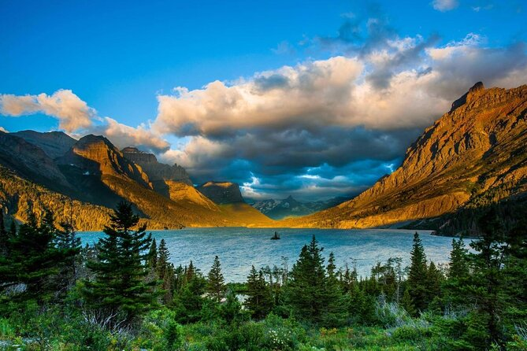
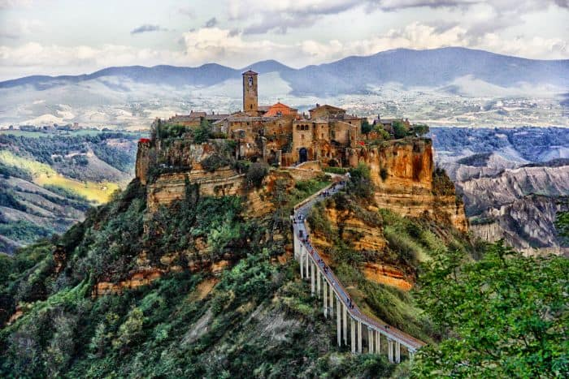
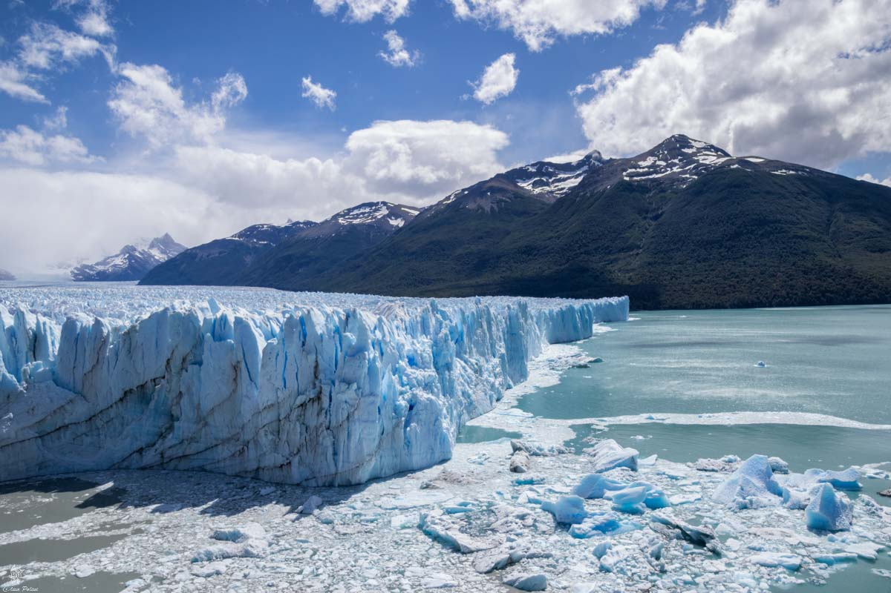

5 LUOGHI DA VISITARE PRIMA CHE SPARISCANO

Il Mar Morto è un mare chiuso, più propriamente un lago, che si trova nel vicino Oriente tra Israele e Giordania. È situato nella depressione più profonda della Terra che si è generata secolo dopo secolo per effetto dell’evaporazione delle sue acque. Le acque dei suoi affluenti non riescono a compensare l’evaporazione e ciò è tra le cause sia della sua salinità che della sua progressiva scomparsa. La preoccupazione maggiore oggi riguarda il bacino inferiore del Mar Morto che non ha mai superato i 2 metri di profondità e che oggi è quasi prosciugato tanto che ormai per questo tratto del grande lago si parla di una zona quasi desertica. Il bacino superiore del Mar Morto, invece, ha una profondità più elevata.
Verso la metà del 20 secolo, gli scienziati hanno iniziato a notare un significativo ritiro nella copertura glaciale del Glacier National Park. Le fotografie indicavano che molti dei 150 precedentemente identificati erano scomparsi. Tra 1850 e 1979, circa il 73% dei ghiacciai era andato perso. Con gli 1980, l'US Geological Survey ha iniziato a studiare i restanti ghiacciai più da vicino, lo stesso decennio in cui i ghiacciai hanno iniziato un modello di ritiro continuo. La scomparsa di questi ghiacciai (e di altri in tutto il mondo) è stata attribuita al riscaldamento globale. Poiché 1900, la temperatura media in questo parco è aumentata di 2.4 ° F, 1.9 è superiore alla media globale. Se le tendenze globali del cambiamento climatico continuano, i ricercatori prevedono che il Glacier National Park non avrà più ghiacciai da 2030. Molti dei restanti ghiacciai attivi (oltre 25) saranno spariti prima di quella data.
La metà dei coralli della Grande barriera corallina australiana è morta negli ultimi 25 anni a causa dei mari più caldi dovuti ai cambiamenti climatici. E a soffrire sono state tutte le specie di coralli. Lo riporta uno studio condotto dagli scienziati marini del Centro di eccellenza per gli studi sulla barriera corallina (ARC) del Queensland, in Australia. La morte dei coralli è dovuta al fenomeno dello sbiancamento (coral bleaching), che si verifica quando la temperatura dell’oceano resta a lungo su valori troppo alti. I coralli reagiscono allo stress termico prima “colorandosi” di una pigmentazione accesa, quindi perdendo completamente colore. A questo stadio sono normalmente dichiarati morti. Gli autori dello studio temono che la capacità della Grande barriera corallina di riprendersi da eventi estremi sia ormai compromessa. Non solo perché ci sono meno adulti di taglia grande. Ma anche perché faticano a crescere le “nuove generazioni”. Falcidiate da due eventi estremi consecutivi, avvenuti nel 2016 e nel 2017. I coralli sono considerati indicatori chiave dello stato degli ecosistemi oceanici. Anche se il riscaldamento globale viene limitato a 1,5 ° C rispetto ai livelli preindustriali, le previsioni dicono che quasi tutte le barriere coralline esistenti subiranno perdite significative.

Civita di Bagnoregio si trova al confine tra Lazio e Umbria, in provincia di Viterbo ed è soprannominata “la città che muore” data la sua posizione erta su un colle tufaceo, destinato tristemente a crollare a causa dell’erosione che subisce costantemente da vento e pioggia. Per questo motivo il paese è quasi disabitato, contando infatti non più di una decina di abitanti. Alle spalle dell’abitato si estende quella che viene chiamata valle dei “calanchi” ovvero delle creste d’argilla esili e ondulate, in continua trasformazione a causa degli agenti atmosferici.
I ghiacciai della Patagonia, i più grandi dell’emisfero australe, si stanno riducendo più velocemente del previsto. Lo indicano i dati del satellite CryoSat-2 dell’Agenzia Spaziale Europea (Esa), rielaborati e pubblicati sulla rivista Remote Sensing of Environment dall’università di Edimburgo. Grazie alle nuove tecniche di elaborazione dei dati di CryoSat, il cui compito è misurare lo spessore dei ghiacci del pianeta, gli studiosi sono riusciti ad avere dei dati molto più precisi. “Con CryoSat abbiamo scoperto che tra il 2011 e 2017 c’è stato un assottigliamento diffuso dei ghiacciai, soprattutto nella parte settentrionale”, spiega all’ANSA Luca Foresta, uno degli autori della ricerca. “Ad esempio il ghiacciaio Jorge Montt si è ritirato di 2,5 chilometri e ha perso circa 2,2 miliardi di tonnellate di ghiaccio l’anno, mentre il ghiacciaio Upsala, che finisce in un lago, ha perso 2,68 miliardi di tonnellate l’anno”, aggiunge Foresta. Il ghiacciaio Pio XI, il più grande del Sud America, è invece avanzato e ha guadagnato massa ad un ritmo di 0,67 gigatonnellate l’anno.
